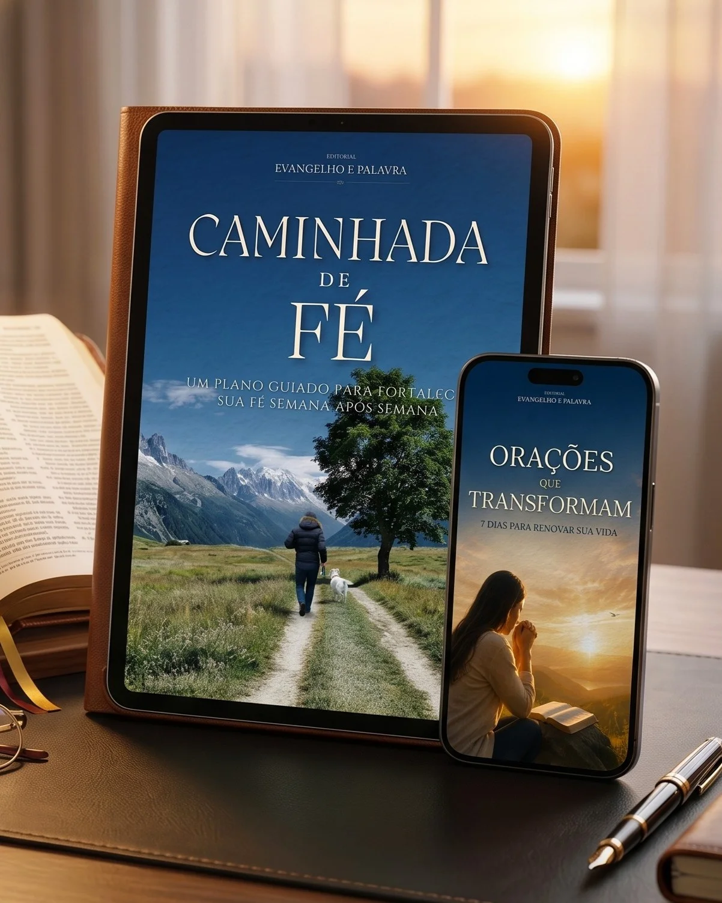
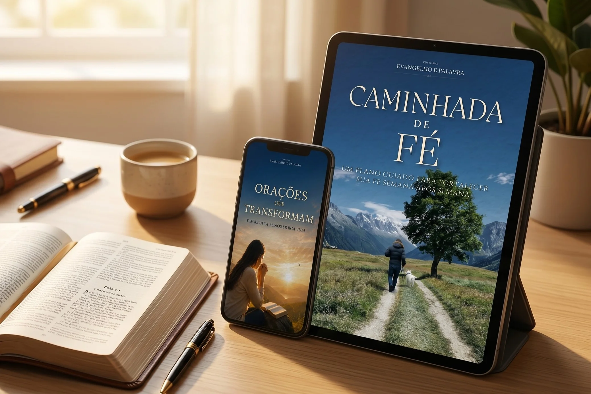
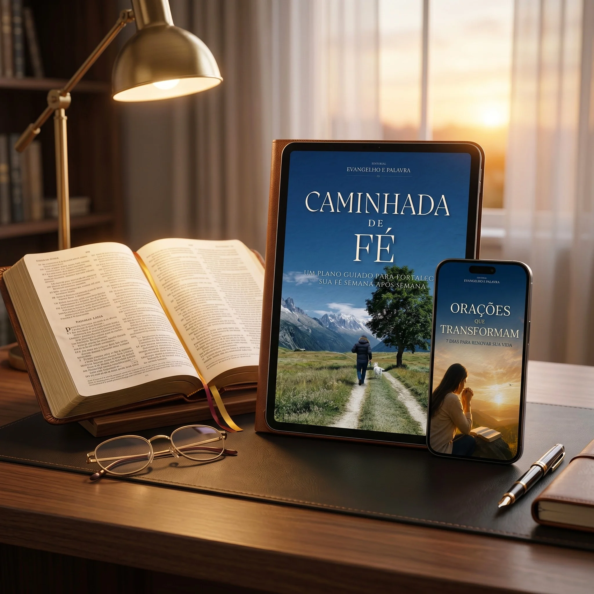

Evangelho e Palavra

Para quem está no meio do processo - cansado do que ficou para trás, com medo do que ainda não chegou - e precisa de uma voz que diga: você não está sozinho nisso.
QUERO COMEÇAR MINHA CAMINHADA86 mil inscritos confiam no canal Evangelho e Palavra
Evangelho e Palavra
Para quem está no meio do processo - cansado do que ficou para trás, com medo do que ainda não chegou - e precisa de uma voz que diga: você não está sozinho nisso.
QUERO COMEÇAR MINHA CAMINHADA86 mil inscritos confiam no canal Evangelho e Palavra

Você não parou de crer.
Você ainda ora. Ainda acredita. Ainda pede.
Mas tem um peso que não sai. Uma pergunta que não cala. Uma sensação de que algo terminou - mas o novo ainda não mostrou a cara.
Talvez tenha sido um casamento. Um emprego. Uma fase que durou anos e acabou do nada. Uma versão de você que você não sabe mais quem é.
E aí você se vê assim:
Você não está fraco. Você está no meio do processo. E o meio é sempre o lugar mais difícil de aguentar.
"O Senhor está perto dos que têm o coração partido."
Salmos 34.18
Ciclos que acabam doem. Mesmo quando precisavam acabar.
A Bíblia não promete que vai ser fácil. Promete que você não vai atravessar sozinho.
Mas atravessar pede mais do que fé - pede direção. Pede uma voz que fale com você semana após semana, que não julgue onde você está, que não exija que você chegue perfeito.
Que te encontre exatamente onde você está.
O produto
O produto
Não é um devocional pesado. Não é religiosidade com cobrança. É um guia espiritual de 52 semanas - um ano inteiro ao seu lado - com orações, reflexões e práticas simples que falam direto com o que você está vivendo.
Cada semana tem um tema. Você escolhe o que fala mais alto hoje. Não tem ordem obrigatória, não tem pressão, não tem ritual.
Só você, a Palavra, e o tempo que Deus precisa pra trabalhar.
O que está incluído
Escritas pra tocar onde a dor aperta, não pra soar bonito no papel.
Que ajudam você a entender o que está vivendo, não só a suportar.
Concretas, simples, aplicáveis no dia a dia de quem tem vida real.
Fim de ciclos, direção, força, paz, proteção, cura interior, propósito, coragem pra recomeçar.
Abre no tema que mais fala com o que você está vivendo hoje.
PDF compatível com celular, tablet e computador. Recebe assim que o pagamento é confirmado.
7 Dias para Renovar sua Vida
Sete orações completas - uma para cada dia - para as áreas que mais pesam: saúde, trabalho, relacionamentos, família, prosperidade, proteção e gratidão.
Para quando você não sabe nem por onde começar a orar. Para quando as palavras não vêm. Para quando você só precisa de alguém que ore por você.
Incluso. Sem nenhum custo a mais.
Quem está por trás deste material
O Evangelho e Palavra é um projeto que nasceu como canal no YouTube e hoje conta com mais de 86 mil pessoas que chegaram até aqui pela mesma razão: precisavam de uma palavra que entendesse o que estavam vivendo.
Mais de 4,5 Milhões de pessoas já foram tocadas por uma mensagem desse canal.
Nos comentários, uma frase se repete toda semana:
"Parece que esse vídeo leu minha vida de trás pra frente."
O Caminhada de Fé nasceu desse mesmo lugar. Das mesmas histórias. Das mesmas dores que aparecem nos comentários às 23h de uma quinta-feira quando alguém está sozinho e precisando de direção.
Não é teoria. É o que funciona pra quem está no meio do processo.
86 mil
inscritos no canal
4,5 mi
pessoas alcançadas
Depoimentos
Ana Paula
Belo Horizonte, MG
"Comecei a usar esse devocional num momento muito difícil. Cada semana foi como uma conversa com Deus que eu não sabia que precisava ter."
Carlos Eduardo
Salvador, BA
"Cada tema semanal parece falar exatamente do que estou vivendo. Recomendo para quem quer sentir Deus mais perto todos os dias."
Márcia
São Paulo, SP
"Perdi minha mãe esse ano e esse material foi meu abrigo. As orações falam exatamente o que meu coração não conseguia expressar."
João
São Paulo, SP
"Nunca fui muito organizado com minhas orações, mas este ebook me ajudou a criar uma rotina leve de fé."
Fernanda
Curitiba, PR
"Nunca consegui manter constância em devocionais. Com esse, cheguei na semana 30 sem perceber. A linguagem é leve e não me condena."
Rosana
Fortaleza, CE
"Passei por uma separação muito dolorosa. Esse devocional me ajudou a me reconectar com Deus sem julgamento, no meu tempo."
Moisés
Rio de Janeiro, RJ
"Me trouxe não só reflexões profundas, mas também uma paz que eu nem sabia que precisava. Parece uma conversa escrita pra mim."
Claudia
Porto Alegre, RS
"Presenteei minha irmã com esse material e ela me disse que foi o melhor presente que já recebeu. Simples, profundo e bonito."
Garanta o seu acesso
Um plano guiado para fortalecer sua fé - semana após semana
Por apenas
R$ 27
pagamento único

Caminhada de Fé
Bônus: Orações que Transformam
Compra 100% segura via Hotmart. Acesso imediato no seu e-mail.
Combo completo com acesso imediato.
Se você abrir o material e sentir que não é pra você - devolvo cada centavo. Sem perguntas, sem burocracia.
Mas depois de centenas de pessoas que compraram sem um único pedido de reembolso - a garantia está aqui mais por respeito a você do que por necessidade.
Não é coincidência. Nunca é.
Deus está no meio do processo com você. E esse material existe pra te lembrar disso - semana após semana, no seu ritmo, sem cobrança.
O próximo passo é simples.
Acesso imediato. Garantia de 7 dias. Sem risco.
Dúvidas
Para qualquer pessoa que deseja fortalecer sua espiritualidade, renovar sua fé e encontrar direção em sua caminhada com Deus. Ideal tanto para quem já tem uma rotina de oração quanto para quem está começando ou recomeçando.
Ao adquirir o Caminhada de Fé, você também receberá o bônus exclusivo "Orações que Transformam: 7 Dias para Renovar sua Vida" - um ebook com orações completas para áreas essenciais da sua vida, como saúde, trabalho e família.
Caminhada de Fé: 278 páginas de conteúdo concreto e ilustrado.
Bônus Orações que Transformam: 57 páginas de conteúdo concreto e ilustrado.
Escudo Sagrado (conteúdo opcional): 52 páginas de conteúdo concreto e ilustrado.
Sim. O ebook será enviado em formato PDF, compatível com computadores, tablets e smartphones. Você poderá acessá-lo onde e quando quiser, sem complicações.
Você receberá o acesso por e-mail assim que o pagamento for confirmado. Também é possível acessar diretamente pela Hotmart: faça login, acesse o menu lateral, clique em "Minha conta" e depois em "Minhas compras" - lá estarão todos os produtos adquiridos.
O prazo de garantia é o período que você tem para solicitar o reembolso integral do valor pago, caso o produto não seja satisfatório. São 7 dias a partir da data da compra, sem perguntas e sem burocracia.
Não. Trata-se de um eBook - um livro digital. Quaisquer imagens ilustradas com livros físicos são apenas para fins de publicidade.
Acesse diretamente pelo link: youtube.com/channel/UCEaw9TM54on97ZAH2L1wDng